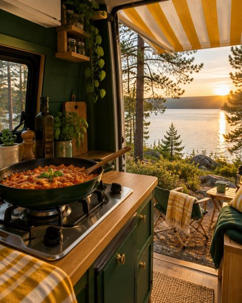
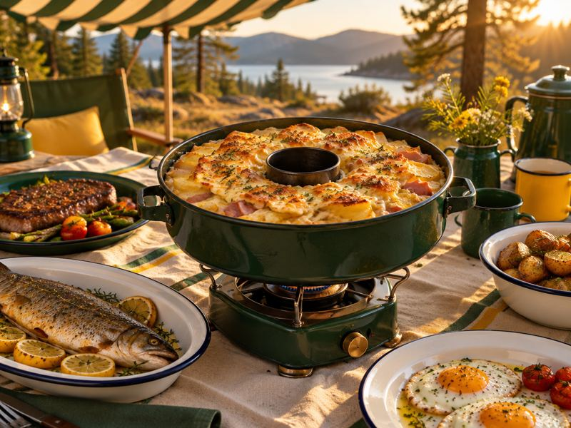
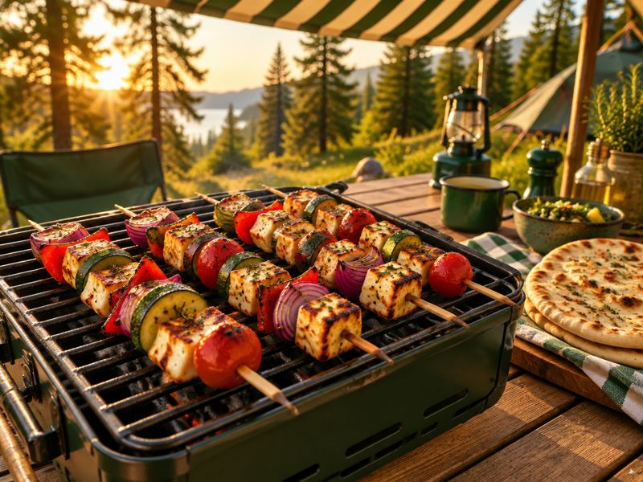
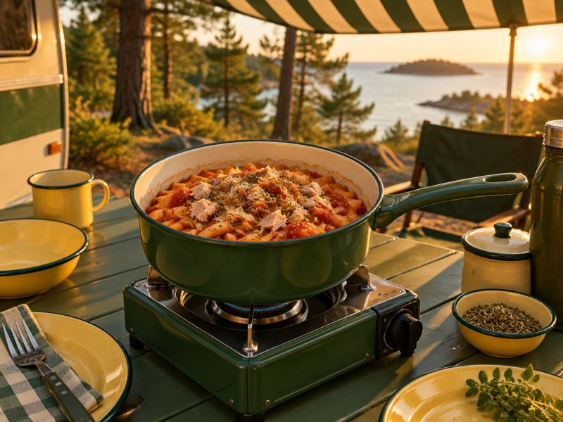
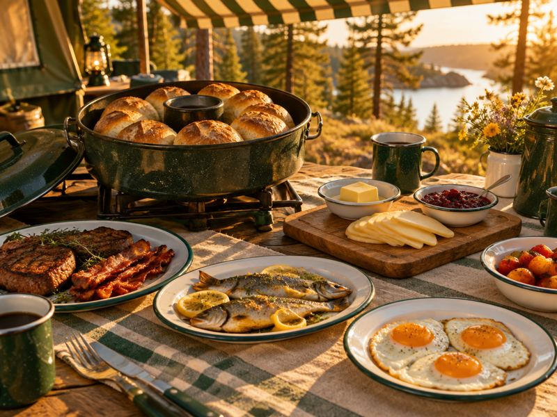
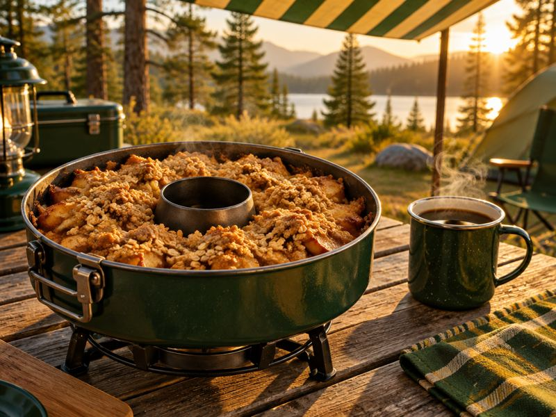
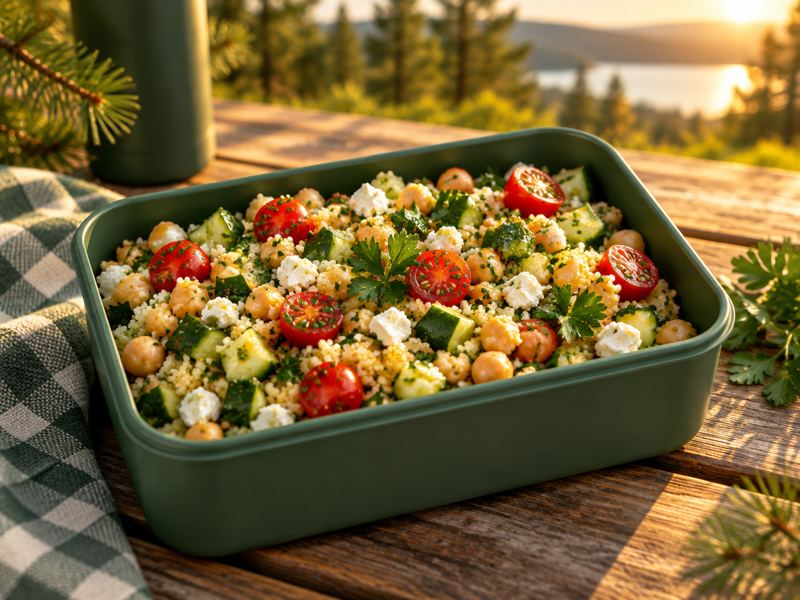

Kühlschrank-Tetris
Wenig Platz in der Kühlung. Zweiflammer bevorzugt Zutaten, die ungekühlt lagern, und plant angebrochene Packungen mit ein.
Zwei Flammen, ein Omnia, eine kleine Kühlbox: Zweiflammer plant die Woche für genau diese Bordküche. Mit Einkaufsliste vor der Abfahrt und Hinweisen, was in die Kühlung muss. Mit zwei Flammen, Omnia und Kühlbox gehen 107 unserer Rezepte.
Ohne Konto. Deine Eingaben bleiben auf deinem Gerät.

Wenig Platz in der Kühlung. Zweiflammer bevorzugt Zutaten, die ungekühlt lagern, und plant angebrochene Packungen mit ein.
95 Rezepte gehen mit einer einzigen Flamme, Topf und Pfanne. Der Omnia macht Gratin und Kuchen auf dem Gasherd.
Der Einkauf für mehrere Tage steht vor der Abfahrt, nach Abteilungen sortiert.
Was hat deine Bordküche? Wir zählen live, wie viele Rezepte damit gehen.






Alle Preise und Bedingungen · Kündigen jederzeit über „Verträge hier kündigen“, ohne Login.
Ja. Einmal geöffnet, läuft der Planer auch offline. Installier ihn dafür auf dem Startbildschirm.
Ein Backofen, den man auf die Gasflamme stellt. Wenn du keinen hast, lässt du das Kästchen leer.
Noch nicht. Die Preise sind Schätzwerte für deutsche Ketten.
Ein Tagesplan ist gratis. Der Saison-Pass kostet 24,99 € einmalig für 6 Monate und endet von selbst.